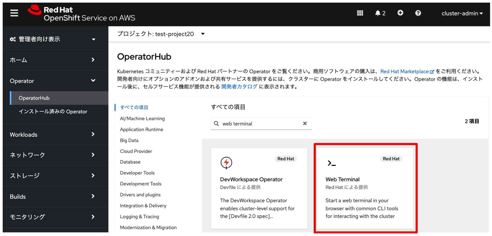
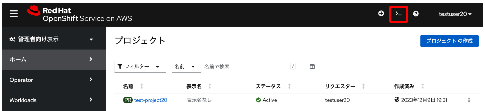
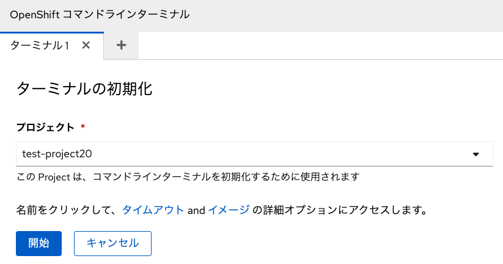
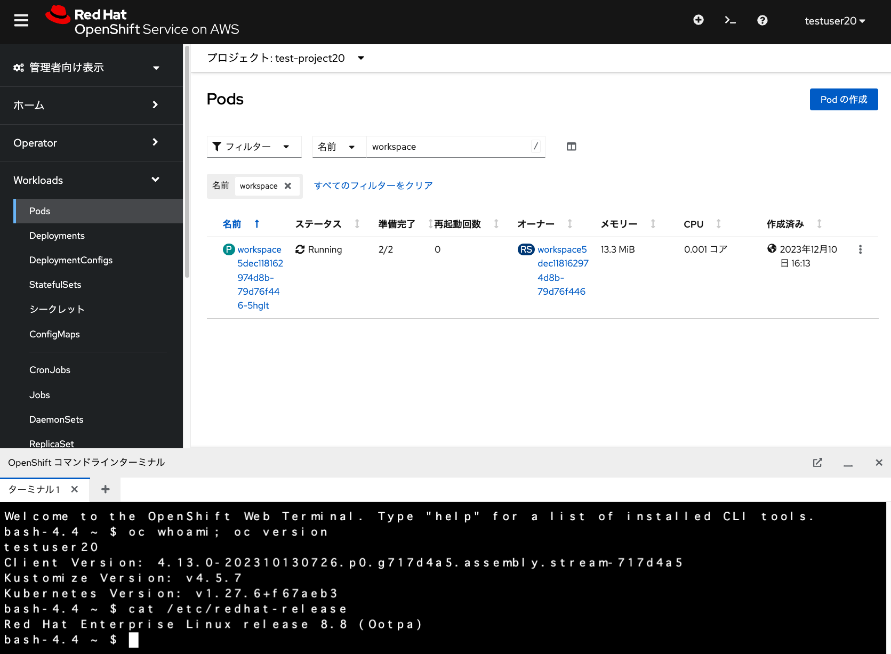

Web Terminalの利用
演習の概要
このモジュールでは、ROSAクラスターのコンソール上で、Web Terminalを実行します。
Web Terminalの利用
OpenShiftでは、Webコンソール上でTerminalを実行するための「Web Terminal Operator」を標準で提供しています。 OperatorHubからWeb Terminal Operatorをインストールするだけで、Web Terminalを利用できるようになります。
本演習をワークショップ形式で実施している場合、予めWeb Terminal Operatorがインストールされている ROSAクラスターを利用します。自習する場合は、cluster-adminユーザーなどで、OperatorHubから Web Terminal Operatorをインストールしてください。インストール時のパラメーターは、全てデフォルト値を利用します。

Web Terminal Operatorがインストールされている場合、OpenShiftのWebコンソール上で、
>_ アイコンが表示されていますので、これをクリックします。

すると、下記の画面が表示されますので、「開始」をクリックして、Web Terminalを実行します。

Web Terminalを実行すると、選択したプロジェクトに「workspace」という接頭辞が付いたPodが自動的に実行されます。 このPodが実行されている間、Terminalの情報は保存されます。永続ボリュームによるデータ保存はしていないため、 ワーカーノードが削除されると、作成したファイルなども削除されますので、ご注意ください。

このTerminalでは、OpenShift CLI(ocコマンド)やsshなどが利用できます。色々試してみてください。